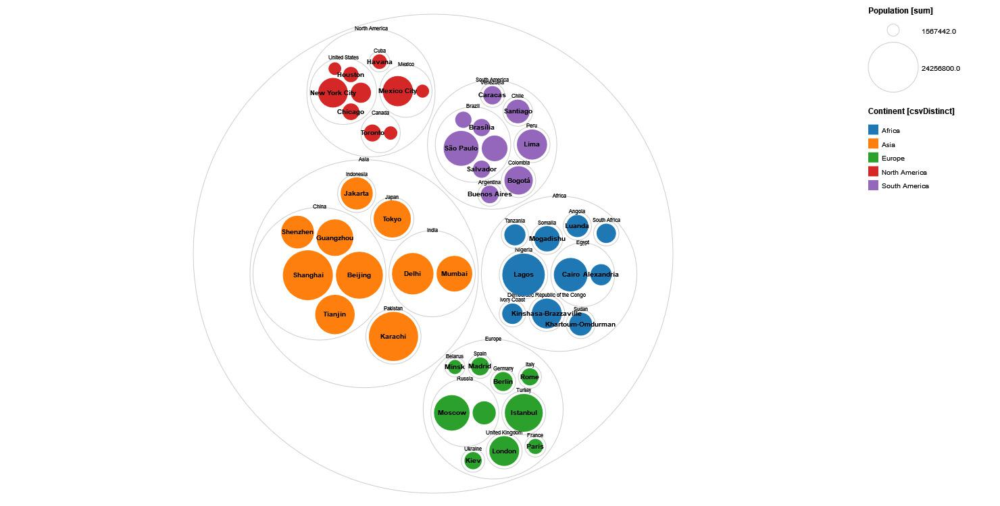

Diagrammtypen in RAWGraphs
Die auf dieser Unterseite versammelten Materialien stellen derzeit noch Work-in-progress dar. Wir bitten daher etwaige Rechtschreibfehler und Inkonsistenzen zu entschuldigen.
RAWGraphs stellt verschiedene Diagrammtypen zur Verfügung, mit denen Daten visualisiert werden können. Abhängig davon, welchen Aspekt der Daten man in den Vordergrund stellen möchte, kann ausgewählt werden, in welcher Diagrammform die Daten präsentiert werden sollen. Es gibt dabei nicht eine einzige Art und Weise, wie die Daten korrekt dargestellt werden können. Die Wahl eines Diagrammtyps hängt stark von der Darstellungsintention ab. Würde man beispielsweise mit Daten zu Flughäfen in verschiedenen Ländern arbeiten, könnte man zum einen durch ein Balkendiagramm (Bar chart) darstellen, wieviele Flughäfen pro Land vorhanden sind (Häufigkeiten). Möchte man nicht nur eine reine Anzahl darstellen, sondern die Namen der Flughäfen, ihre Lokalisierung in einem Land und die von dort operierenden Fluggesellschaften, würde sich die Darstellung als Hierarchie anbieten, wobei das Land die oberste Hierarchiebene, der Flughafenname die mittlere Hierarchiebene und die Fluggesellschaften die unterste Hierarchieebene darstellen würden. Eine weitere Möglichkeit wäre, die Entwicklung der Anzahl von Flughäfen eines Landes in einem Vergleich über 20 Jahre zu präsentieren (Veränderungen im Zeitverlauf). Inwiefern die Flughäfen miteinander vernetzt sind und von welchem Flughafen welche anderen Flughäfen erreichbar sind, ließe sich wiederum mit einem Netzwerk darstellen.
Die nachfolgende Beschreibung der jeweiligen Diagrammtypen basiert auf den in RAWGraphs zur Verfügung gestellten Tutorials, der Webseite “How to Choose the Right Data Visualization” sowie den eigenen im DiCi-Hub-Team gemachten Erfahrungen mit Visualisierungen. Es wird im Folgenden nicht jeder in RAWGraphs vorhandene Diagrammtyp vorgestellt, sondern die gängigsten Varianten, die man typischerweise in den Geisteswissenschaften nutzt.
Hierarchien
Die in RAWGraphs vorhandenen Diagrammtypen für hierarchisch strukturierte Daten sind sich sehr ähnlich, was die Erstellung einer Visualisierung und die vorausgesetzte Grundstruktur der Daten angeht. Der einzige Unterschied zwischen den Diagrammtypen ist die räumliche Anordnung der einzelnen Elemente in der Darstellung.
Treemap
Alternative Namen: Kacheldiagramm
Was stellt es dar: In einer Treemap können hierarchisch strukturierte Daten dargestellt werden. Die Daten sind nach Kategorien sortiert. Es existieren Oberkategorien, die in verschiedene Unterkategorien unterteilt werden. Die Unterkategorien können ebenfalls Unterkategorien enthalten. Für jede Kategorie wird eine Kachel eingefügt. Oberkategorien bestehen dementsprechend aus einer großen Kachel, in die kleinere Kacheln eingefügt werden. Die größe der Kacheln ist dabei abhängig von der Größe/Häufigkeit der Kategorie. Die Oberkategorien können farblich unterschieden werden.
Beispiel hier: Dargestellt sind Städte mit den höchsten Einwohnerzahlen sortiert nach Kontinenten. Die Kontinente bilden die jeweilige Oberkategorie, die Städte sind als Kacheln den Kontinenten farblich zugeordnet. Die Größe der Kacheln ist abhängig von der Größe der Bevölkerung der Stadt.
Welche Fehler sollten allgemein in Bezug auf diesen Diagrammtyp vermieden werden: Theoretisch kann die Anzahl der Hierarchieebenen in den Daten beliebig groß sein. Das heißt Unterkategorien könnten Unterkategorien haben, die wiederum Unterkategorien haben etc. Dies macht das Diagramm jedoch schnell unübersichtlich und unlesbar. Es ist sinnvoll nicht mehr als drei Hierarchieebenen zu haben.
Was ist bei RAWGraphs zu diesem Diagrammtyp zu beachten: Da es in RAWGraphs keine umfassende Möglichkeit gibt, die Position von Beschriftungen zu verändern, passiert es in RAWGraphs bei diesem Diagrammtyp leicht, dass die Beschriftung der Kacheln abgeschnitten wird. Dieses Problem kann etwas behoben werden, indem die Gesamtgraphik größer gemacht und in die Breite gezogen wird. Dies ist jedoch nur begrenzt machbar ohne das Diagramm zu stark zu verzerren. Außerdem ist es möglich in der Rubrik “4. Customize” unter Chart die Form und Anordnung der Kacheln zu beeinflussen (Tiling Method). Auch der Abstand zwischen den Kacheln kann vergrößert oder verkleinert werden (Padding).
So könnte eine geeignete Datentabelle aufgebaut sein: Hierarchische Daten erfordern die Angabe von Kategorien, die jeweils in einer Spalte stehen. Zusätzlich kann eine Spalte vorliegen, die etwas über die Größe einer der Kategorien aussagt.
Nachfolgend ist ein vereinfachter Auszug aus dem in RAWGraphs genutzten Beispieldatensatz Most Populated cities per continent gezeigt:
| Oberkategorie / Continent | Unterkategorie der Oberkategorie / Country | Unterkategorie der Unterkategorie / City | Größe der Unterkategorie der Unterkategorie / Population |
|---|---|---|---|
| South America | Peru | Lima | 8894412 |
| South America | Brazil | Rio de Janeiro | 6476631 |
| Asia | China | Shanghai | 24256800 |
| Africa | Nigeria | Lagos | 17578000 |
So wäre eine Datentabelle für eine Treemap in RAWGraphs ungeeignet: Die Daten müssen klaren Kategorien zugeordnet sein, ansonsten ist keine Hierarchisierung möglich.
Welche Variablen werden in RAWGraphs für diesen Diagrammtyp benötigt:
{kind=link}
Hierarchy*: ist Pflichtfeld. Hier können beliebig viele Kategorien eingefügt werden. Jedes Datenformat ist hier möglich.
Size: Bestimmt die Größe der Kacheln. Hier ist im Normfall die unterste Kategorie zu nutzen. Es muss sich dabei um Zahlenwerte handeln.
Color: Hier kann einen Kategorie ausgewählt werden, die die Farbe der zugehörigen Kacheln bestimmt. Im Normalfall ist hier die Oberkategorie zu nutzen. Jedes Datenformat ist hier möglich.
Label: Das Label sorgt für die Beschriftung der Einzelkacheln. Hier ist im Normfall die unterste Kategorie zu nutzen. Jedes Datenformat ist hier möglich.
Circle Packing
Alternative Namen: Circular Treemap

Der Diagrammtyp Circle Packing funktioniert analog zum Diagrammtyp Treemap, siehe daher die Beschreibung dort. Der Unterschied zwischen den beiden Diagrammtypen ist, dass beim Circular Packing anstatt eckiger Kacheln Kreise zur Darstellung genutzt werden. In der Rubrik “4. Customize” unter Chart kann die Anordnung der Kreise im Diagramm verändert werden, indem sie absteigend oder aufsteigend nach ihrer Größe sortiert werden.
Linear dendrogram
Alternative Namen: Clusterbaum, Baumdiagramm
Was die zugrundeliegende Datenstruktur und das Mapping angeht, funktioniert ein Linear dendogram prinzipiell wie eine Treemap, siehe daher die Beschreibung dort. Ein Linear dendogram ist so aufgebaut, dass die Oberkategorie als Punkt auf der linken Seite des Diagramms dargestellt ist, von diesem Oberkategorie-Punkt zweigen die Unterkategorien wie die Äste eine Baumes ab und bilden eigene Punkte aus, von denen weitere Unterkategorien abzweigen können. Die Größe der Punkte zeigt, wie es auch bei den Kacheln einer Treemap der Fall ist, die Größe der Kategorie an. In der Rubrik “4. Customize” unter Chart kann die maximale Größe eines Kreises definiert werden. Unter “Layout Algorithm” kann die Baumstruktur zudem angepasst werden. Die jeweiligen Unterkategorien können abhängig von ihrer Größe aufsteigend oder absteigen oder alphabetisch angeordnet werden (Sort nodes by).
Circular dendrogram
Alternative Namen: Radial Tree
Was die zugrundeliegende Datenstruktur und das Mapping angeht, funktioniert ein Circular dendogram prinzipiell wie eine Treemap, siehe daher die Beschreibung dort. Des Weiteren besteht eine große Ähnlichkeit mit einem Linear dendrogram. Während das Linear dendrogram jedoch die Äste mit den abzweigenden Unterkategorien in eine Richtung erstreckt (im Normalfall von links nach rechts), sind bei einem Circular dendrogram alle abzweigenden Unterkategorien kreisförmig um die Oberkategorie angeordnet. Ansonsten gelten auch hier die für das Linear dendrogram gemachten Erklärungen.
Sunburst diagram
Alternative Namen: Ring Chart, Radial Treemap
Ein Sunburst diagram funktioniert prinzipiell wie eine Treemap, siehe daher die Beschreibung dort. Anders als in der Treemap mit ihren ineinander geschachtelten Kacheln, ist im Fall eines Sunburst diagrams jede Hierarchiebene durch einen Ring repräsentiert, der sich um die jeweilige übergeordnete Kategorie legt. Dies bedeutet, dass sich die Oberkategorie in der Mitte befindet, während die unterste Kategorieebene außen zu finden ist. Das Diagramm bildet keinen gleichförmigen Kreis, da unterschiedlich viele Unterkategorien zugeordnet sein können. Dies stellt einen Vorteil zu einer Treemap oder anderen hierarchischen Diagrammtypen dar, da in einem Sunburst Diagram mehr Unterkategorien dargestellt werden können, ohne das Diagramm sofort unlesbar zu machen. Aber auch hier sollte die Anzahl an Unterkategorien begrenzt werden, um nicht an Übersichtlichkeit einzubüßen.
Häufigkeiten
Bar chart
Alternative Namen: Balkendiagramm, Säulendiagramm
Was stellt es dar: Ein Bar chart ist ein Diagramm mit zwei Achsen, in dem mehrere „Balken“ nebeneinander angeordnet sind. Eine Achse stellt dabei eine kategorische Einteilung dar, die andere den Wert der jeweiligen Kategorie.
Beispiel hier: Die Beliebtheit (Durchschnitt des IMDB-Ratings) von verschiedenen Serien-Genres im Zeitraum von 2013-2017. Auf der Y-Achse des Bar chart findet sich die Kategorisierung (die einzelnen Genres) und auf der X-Achse die jeweiligen Werte (das durchschnittliche IMDB-Rating). Diese Visualisierung wird jeweils für die Jahre 2013-2017 (also als eine Serie) wiederholt.
Welche Fehler sollten allgemein in Bezug auf diesen Diagrammtyp vermieden werden: Mit einem Bar chart kann eine Verteilung von Datenpunkten oder auch ein Vergleich von Werten realisiert werden. Dafür sind einerseits eindeutige Kategorien (Genre, Länder, Jahre, etc.) notwendig, andererseits numerische Werte (Rating, Einwohnerzahl, Verkaufszahlen, etc.) Ein Bar Chart kann auf verschiedene Weise verfälscht werden:
Die Werte-Achse sollte bei 0 beginnen und keine Lücken aufweisen.
Es sollten keine Abrundungen oder 3d Effekte verwendet werden (diese schränken die Vergleichbarkeit der einzelnen Balken ein).
Es sollten keine unnötigen Einfärbungen verwendet werden (dadurch könnten ungewollte, zusätzliche Bedeutungen wahrgenommen werden).
Kategorien sollten nach der Größe ihrer Werte sortiert werden (dies macht einen Vergleich einfacher).
Es sollten keine Bilder oder Icons als Balken verwendet werden (dies verzerrt oft Aussage der Graphik).
Was ist bei RAWGraphs zu diesem Diagrammtyp zu beachten: Es ist wichtig, dass die Spalte des Datensatzes mit den numerischen Werten auch tatsächlich nur Zahlen enthält.
Nutzt man beim Mapping in RAWGraphs nur das Pflichtfeld “Bars” werden die einzelnen Balken nicht mit ihren zugehörigen Werten dargestellt, sondern die Balkengröße wird durch die Häufigkeit der Kategorie/des Balkennamens wiedergegeben, was in vielen Fällen einfach nur 1 sein wird. In der Rubrik “4. Customize” unter Chart kann eingestellt werden, ob die Balken des Diagramms horizontal oder vertikal angeordnet werden sollen (Bars orientation). Die Balken können ab- und aufsteigend nach Größe oder alphabetisch angeordnet werden (Sort bars by). Auch der Abstand zwischen den Balken kann verändert werde (Padding).
So könnte eine geeignete Datentabelle aufgebaut sein: Nachfolgend ist ein vereinfachter Auszug aus dem in RAWGraphs benutzten Beispieldatensatz Netflix Original Series 2013/2017 gezeigt:
| Mindestens eine Art von Kategorie (beispielsweise Genre) | Eine weitere beliebige Art von Kategorie (beispielsweise Titel) | Mindestens eine Art von numerischen Werten (beispielsweise Rating) | Beliebig viele weitere Spalten mit Kategorien oder Werten |
|---|---|---|---|
| Animation | Star Wars: The Clone Wars (season 6) | 80 | … |
| Comedy | Arrested Development (season 4) | 89 | … |
So wäre eine Datentabelle für einen Bar chart in RAWGraphs ungeeignet:
| Genre | Title | Subgenre |
|---|---|---|
| Comedy | BoJack Horseman | Adult Animation |
| Comedy | Trailer Park Boys (seasons 8, 9, 10 and 11) | Mockumentary |
Hier fehlt eine Spalte mit numerischen Werten für die einzelnen Kategorien. Sobald jedoch mindestens eine Spalte mit Kategorien und mindestens eine Spalte mit numerischen Werten vorhanden ist, kann ein Bar Chart erstellt werden – es ist deshalb auch wesentlich einfacher zu erstellen als andere, komplexere Visualisierungen.
Welche Variablen werden in RAWGraphs für diesen Diagrammtyp benötigt:
Bars*: ist Pflichtfeld. Hier werden die Kategorien eingefügt, die die jeweiligen Balken bilden. Es kann jedes Datenformat hier genutzt werden.
Size: Hier wird der Wert eingefügt, der die Höhe des jeweiligen Balkens bestimmt. Es muss sich dabei um ein Zahlenformat handeln.
Color: Die Balken können farbig markiert werden. Dies kann dann Sinn machen, wenn mehrere Balken einer gemeinsamen Oberkategorie vorliegen und die Einfärbung gemäß dieser Oberkategorie geschieht. Jedem einzelnen Balken eine unterschiedliche Farbe zu geben, führt nicht unbedingt zu einer besseren Übersichtlichkeit. Hier kann jedes Datenformat genutzt werden.
Series: erlaubt eine Serie von Balkendiagrammen zu erstellen, wenn z.B. Daten für verschiedene Jahre oder beispielsweise für verschienden Länder vorliegen. Hier kann jedes Datenformat genutzt werden.
Multi-set bar chart
Alternative Namen: Grouped Bar Chart, Gruppiertes Balken-/Säulendiagramm
Was stellt es dar: Ein Multi-set bar chart erfüllt eine ähnliche Funktion wie ein Stacked bar chart: Es können zwei kategorische Dimensionen dargestellt werden. Die primären Kategorien werden auf der X-Achse angeordnet. Zu jeder dieser primären Kategorien existiert aber gleichzeitig ein jeweils identisches Set von Unterkategorien, die als farblich unterschiedene Balken jeder der primären Kategorien zugeordnet werden. Ein Multi-set bar chart ist nützlich, um die Veränderung von Unterkategorien im Kontext einer primären Kategorisierung zu untersuchen. Dabei können Vergleiche innerhalb einer Gruppe angestellt werden, indem die Werte der einzelnen Unterkategorien in einer primären Kategorie verglichen werden oder Vergleiche außerhalb einer Gruppe angestellt werden. Gleichzeitig können aber auch Werte der einzelnen Unterkategorien zwischen mehreren primären Kategorien verglichen werden.
Beispiel hier: Die Länder mit den zehn größten Bruttoinlandsprodukten werden dargestellt. Jedes Land (primäre Kategorisierung) erhält eine Gruppe von Balken, welche die einzelnen Sektoren des Bruttoinlandsprodukt (sekundäre Kategorisierung) darstellen.
Welche Fehler sollten allgemein in Bezug auf diesen Diagrammtyp vermieden werden: Wichtig ist, welche Kategorie die primäre Dimension (X-Achse) ist und welche die sekundäre Dimension (die einzelnen Balken) darstellt. Zeitliche Daten (Jahreszahlen), numerische Hierarchien (Altersgruppen) sind meistens primär. Typen (Gender, Länder) sind meistens sekundär. Letztendlich ist dies aber je nach Visualisierung anders möglich. Der Multi-set bar chart ist nicht geeignet, um die Gesamtverteilung der primären Kategorien zu vergleichen. In diesem Fall ist ein Bar chart, ein Stacked bar chart oder ein Pie chart sinnvoller. Gleichzeitig ist zu bedenken, dass in einem Multi-set bar chart nur eine bestimmte Anzahl von Balken darstellbar ist, um eine Übersichtlichkeit zu gewährleisten. Die Anzahl der primären Kategorien muss daher, auch in Abhängigkeit von der Anzahl der Unterkategorien, begrenzt werden.
Was ist bei RAWGraphs zu diesem Diagrammtyp zu beachten: In der Rubrik “4. Customize” unter Chart besteht die Möglichkeit den Abstand zwischen den Gruppen und den einzelnen Balken einzustellen. Des Weiteren können die primären Kategorien auf der X-Achse ab- und aufsteigend nach ihren Werten oder alphabetisch nach ihren Namen sortiert werden (Sort X axis by).
So könnte eine geeignete Datentabelle aufgebaut sein: Nachfolgend ist ein vereinfachter Auszug aus dem in RAWGraphs benutzten Beispieldatensatz GDP sector composition dargestellt.
Es müssen mindestens zwei Spalten mit Arten von numerischen Werten vorliegen, die die sekundären Kategorien des Multi-set bar chart bilden.
| Eine Art von Kategorie (beispielsweise Land) | Eine Art von numerischen Werten (beispielsweise Umsatz in Landwirtschaft) | Eine weitere Art von numerischen Werten (beispielsweise Umsatz in Industrie) |
|---|---|---|
| China | 1833590 | 9400050 |
| European Union | 333600 | 5233350 |
So wäre eine Datentabelle für einen Multi-set bar chart in RAWGraphs ungeeignet: Es muss mindestens eine Art von primärer Kategorie und mindestens zwei Arten von numerischen Werten vorliegen, die die sekundären Kategorien bilden.
Welche Variablen werden in RAWGraphs für diesen Diagrammtyp benötigt:
X Axis*: ist Pflichtfeld. Hier werden die primären Kategorien angegeben, die auf der X-Achse angezeigt werden. Jedes Datenformat ist hier möglich.
Size: Hier werden die sekundären Kategorien eingefügt, deren Werte die einzelnen Balken darstellen. Die Werte müssen im Zahlenformat vorliegen.
Series: erlaubt eine Serie von Balkendiagrammen zu erstellen, wenn z.B. Daten für verschiedene Jahre oder beispielsweise für verschienden Länder vorliegen. Hier kann jedes Datenformat genutzt werden.
Stacked bar chart
Alternative Namen: gestapeltes Balken-/Säulendiagramm
Was stellt es dar: Ein Stacked bar chart weist viele Parallelen zur einem Bar chart und einem Multi-set bar chart auf. Gegenüber einem einfachen Bar chart kann, genau wie bei einem Multi-set bar chart, in einem Stacked bar chart eine weitere kategorische Dimension in der Visualisierung berücksichtigt werden. Jeder Balken einer primären Kategorie ist in mehrere Abschnitte aufgeteilt, wobei diese jeweils die Werte einer zusätzlichen, sekundären Kategorie anzeigen (siehe dazu auch die Beschreibung zum Multi-set bar chart).
Beispiel hier: Die zehn Länder mit dem größten Bruttoinlandsprodukt und dessen Zusammensetzung. Auf der X-Achse findet sich die erste Kategorie-Dimension (Länder), auf der Y-Achse die jeweiligen Werte (die Größe des Bruttoinlandsprodukt). Die Unterteilung der Balken stellt die zweite Kategorie-Dimension dar (Sektoren des Bruttoinlandsprodukt).
Welche Fehler sollten allgemein in Bezug auf diesen Diagrammtyp vermieden werden: Eine große Herausforderung für die Lesbarkeit des Diagramms stellt dar, dass nur der Balken ganz links neben der Beschriftung der X-Achse steht. Je weiter rechts ein Balken steht, desto schwerer wird es, genaue Werte abzulesen. Daher sollte auf zu viele Balken verzichtet werden. Für weitere Anmerkungen siehe auch die Beschreibung zum Multi-set bar chart.
Was ist bei RAWGraphs zu diesem Diagrammtyp zu beachten: In der Rubrik “4. Customize” unter Chart kann zum einen der Abstand der Balken zueinander verändert werden (Padding). Zum anderen können die primären Kategorien auf der X-Achse ab- und aufsteigend nach ihren Werten oder alphabetisch nach ihren Namen sortiert werden (Sort X axis by). Des Weiteren kann die Reihenfolge der aufeinander gestapelten Balkenelemente ab- und aufsteigend nach Größe anpasst werden (Sort stacks by).
Sowohl in Bezug auf den notwendigen Aufbau der Datentabelle als auch das Mapping siehe die Angaben zum Multi-set bar chart.
Verteilungen
Box plot
Alternative Namen: Box-Whisker-Plot, Kastendiagramm
Was stellt es dar: Der Diagrammtyp zeigt, in welchem Bereich die Daten liegen und wie sie sich über diesen Bereich verteilen. Es lässt sich dadurch erkennen, ob die Werte gleichmäßig verteilt sind oder eine „schiefe“ Verteilung vorliegt, wobei die Werte vermehrt in einem Bereich liegen. Ein Box plot ist dann von Vorteil, wenn man verschiedene Werte miteinander vergleichen will, also mehrere „Kästen“ (Boxes) nebeinander stellen kann, wie im oben gezeigten Beispiel. Ein Box plot ist dabei aus unterschiedlichen Werten zusammengesetzt:
Werte innerhalb des „Kastens“
- der „Kasten“ an sich umfasst 50% der vorhandenen Daten
- unterste Begrenzung des Kastens = Unteres Quartil: 25% der Datenwerte sind gleich oder kleiner als dieser Wert
- Strich innerhalb des Kastens = Median: 50% der Datenwerte sind gleich oder kleiner als dieser Kennwert
- oberste Begrenzung des Kastens = Oberes Quartil: 75% der Datenwerte sind gleich oder kleiner als dieser Kennwert
die beiden „Antennen“ (=Whisker)
- oberstes Ende des oberen Whiskers = der maximalste Datenwert
- unterstes Ende des unteren Whiskers = der minimalste Datenwert
Beispiel hier: Wetter in New York 2012-2015. Hier werden die Höchsttemperaturen in New York in Zusammenhang mit der Wetterlage gesetzt (wie sind die Höchsttemperaturen während Sonnenschein, Regen, Nieselregen, Schnee oder Nebel). Betrachtet man die Höchsttemperaturen bei Regen, sieht man, dass sich die Temperaturwerte zwischen 2.8 und 37.2 Grad bewegen. Wie der „grüne Kasten“ zeigt, liegen 25% der gemessenen Werte unterhalb von 12.8 Grad und 75% der gemessenen Werte liegen unter 25.5 Grad. 50% der Datenwerte sind niedriger bzw. höher als 18.9 Grad.
Welche Fehler sollten allgemein in Bezug auf diesen Diagrammtyp vermieden werden: Was ein Box plot nicht zeigen kann, ist die exakte Häufigkeit, mit der ein Einzelwert auftritt. In dem oben genannten Beispiel können wir z.B. nicht ablesen, ob die niedrigste Temperatur von 2.8 Grad nur einmalig auftritt oder vielleicht sogar zweimal gemessen wurde. Um darzustellen, wie oft ein einzelner Temperaturwert gemessen wurde, muss auf einen anderen Diagrammtyp wie z.B. ein Histogramm zurückgegriffen werden. Histogramme als Diagrammtyp sind allerdings in RAWGraphs nicht verfügbar und müssten mit einem anderen Tool erstellt werden. Eine Alternative stellen noch Violin plots dar.
Was ist bei RAWGraphs zu diesem Diagrammtyp zu beachten: Mit anderen Tools lassen sich auch leicht abgewandelte Box plots erstellen, die etwas anders mit Maximal- und Minimalwerten umgehen. Mit RAWGraphs kann allerdings nur die oben dargestellte Form eines Box plots erstellt werden. Ein paar Erklärungen hierzu findet man auch in einem Wikipedia-Artikel zu Box plots.
In der Rubrik “4. Customize” unter Chart lässt sich zum einen die Breite der einzelnen “Kästen” (Bars width), zum anderen der Durchmesser von Punkten (Dots diameter) verändern, die als Ausreißer-Daten in dem Diagrammtyp dargestellt werden können (im oben gezeigten Diagramm ist dies nicht der Fall, da die Datenbasis dies nicht hergibt). Unter Ausreißer-Daten versteht man Datenwerte, die deutlich höher oder niedriger als der Großteil der Werte insgesamt sind. Inwieweit man diese Ausreißer-Daten tatsächlich als Ausreißer verstehen möchte, lässt sich mit der Option “Interquartile range multiplier” regeln. Je höher der Wert hier ist, desto weniger werden Datenwerte als Ausreißer verstanden.
In dem Fall, wo alle Datenwerte der Y-Achse deutlich höher als null liegen, beginnt RAWGraphs automatisiert die Skala der Achse nicht bei null, sondern bei einem anderen, höheren Wert. Möchte man trotzdem die Achse bei null beginnen lassen, kann dies durch die Option “Set Y origin to 0” eingestellt werden.
So könnte eine geeignete Datentabelle aufgebaut sein: Folgendes ist ein vereinfachter Auszug zu dem in RAWGraphs benutzten Datensatz zu Weather in New York, 2012-2015:
| Einzelne Werte/Höchsttemperaturen | Bezeichnung der einzelnen Gruppen, nach denen die jeweiligen „Kästen“ erstellt werden; dieser Part ist optional; enthält die Tabelle nur Werte zu einem einzelnen Objekt, kann auch nur ein einzelner “Kasten” erstellt werden; da die Verteilung von Werten jedoch oft erst im Vergleich interessant ist, bietet es sich an, verschiedene “Kästen” gegenüber zu stellen/Wetterlage |
|---|---|
| 13.3 | rain |
| -2.2 | sun |
| 15.6 | fog |
| 5 | snow |
| 30 | drizzle |
| 4.4 | snow |
| 17.8 | fog |
| 29.4 | drizzle |
| 9.4 | rain |
| 16.1 | sun |
So wäre eine Datentabelle für einen Box plot in RAWGraphs ungeeignet: Die Einzelwerte müssen untereinander in einer Spalte der Tabelle stehen. Sie dürfen nicht in einer Tabellenzeile stehen.
Welche Variablen werden in RAWGraphs für diesen Diagrammtyp benötigt:
Y-Achse*: ist Pflichtfeld. Hier werden die Angaben zu den einzelnen Werten gemacht, dabei muss es sich immer um Zahlenwerte handeln.
Groups und Color: sind optionale Variablen, wenn man verschiedene Objekte vergleichen möchte. Die Farbe muss sinnvollerweise den Gruppen entsprechen. Gruppen und davon abhängig die Farben können Zahlenwerte, Datumsangaben oder Wörter sein.
Violin plot
Alternative Namen: Violindiagramm, Geigendiagramm
Was stellt es dar: Ein Violin plot zeigt ähnlich wie ein Box plot, in welchem Bereich die Daten liegen und wie sie sich über diesen Bereich verteilen. In einem Violin plot wird gleichzeitig dargestellt, wie häufig ein einzelner Wert auftritt, was durch die Breite der „Violine“ auf Höhe des jeweiligen Datenwertes dargestellt wird.
Beispiel hier: Wetter in New York 2012-2015. Hier werden die Höchsttemperaturen in New York in Zusammenhang mit der Wetterlage gesetzt (wie sind die Höchsttemperaturen während Sonnenschein, Regen, Nieselregen, Schnee oder Nebel).
Da viele Ähnlichkeiten zwischen Box plots und Violin plots vorliegen, gelten die für Box plots beschriebenen Erläuterungen zur Datenstruktur und der Nutzung von Variablen ebenso hier.
Was ist bei RAWGraphs zu beachten: Es gibt verschiedene Tools, die in der Lage sind, Box plots und Violin plots miteinander zu kombinieren. Dies ist in RAWGraphs aber nicht der Fall. In einem Violin plot können daher die für Box plots so relevanten Werte wie Median, oberstes und unterstes Quartil etc. nicht dargestellt werden. Da in RAWGraphs keine Histogramme erstellt werden können, kommt einem Violin plot die Darstellung einer Dichteverteilung der Werte am nächsten. Allerdings ist aus einem Violin plot in RAWGraphs die exakte Anzahl der Häufigkeit eines Wertes nicht ablesbar, da dies nicht auf der x-Achse dargestellt wird. Der Violin plot gibt eher einen groben Eindruck über die Häufigkeitsverteilung der Werte im Vergleich mit anderen Einzelwerten. Eine ähnliche Möglichkeit der Darstellung ist auch ein Beeswarm plot.
In der Rubrik “4. Customize” unter Chart lassen sich verschiedene Einstellungen für einen Violin plot vornehmen. Um einen ungefähren Eindruck von der Häufigkeit der einzelnen Werte zu erhalten, kann für jeden Datenwert ein Punkt in den Violin plot eingefügt werden (Show dots on data values) sowie der Durchmesser dieser Punkte bestimmt werden (Dots diameter). Die Reihenfolge der angezeigten “Violinen” kann anhand der Werte ab- oder aufsteigend oder alphabetisch dargestellt werden (Sort violins by). Des Weiteren kann der Abstand zwischen den einzelnen “Violinen” reguliert werden (Padding) sowie die Form der Violin plots nach verschiedenen mathematischen Berechnungen angepasst werden (Curve type). Die Datenpunkte in einem Violin plot sind gleichmäßig auf verschiedene sogenannte “Bins” verteilt. In RAWGraphs besteht die Möglichkeit die Anzahl der Bins zu variieren (Number of bins), was die Darstellung verändert.
Beeswarm plot
Alternative Namen: Dot Plot, Swarm Plot, Punktdiagramm
Was stellt es dar: Ähnlich einem Violin plot wird die Verteilung von Werten zu verschiedenen Objekten/Sachverhalten im Vergleich dargestellt. Parallel zur x-Achse, auf der eine Reihe von ansteigenden oder abfallenden Wertegrößen angezeigt sind, werden Einzelwerte zu einem Thema entlang einer horizontalen Linie gemäß ihrer Größe ausgerichtet. Liegen mehrere identische Werte vor, werden sie rechts oder links der horizontalen Linie gestapelt angeordnet, um Überlappungen zu vermeiden, wodurch eine Ähnlichkeit mit einem Violin plot entstehen kann. Die Größe der einzelnen Punkte kann durch die Größe des entsprechenden Einzelwertes bestimmt werden.
Beispiel hier: Durchschnittliches Gehalt in New York abhängig vom Beruf, wobei die einzelnen Berufe Oberkategorien wie Management, Gesundheitswesen etc. zugeordnet werden. In der dargestellten Graphik ist die Größe der Punkte abhängig von der Größe des Gehalts. Daher werden die Punkte immer größer, je weiter rechts man entlang der X-Achse wandert. Die Y-Achse zeigt die Oberkategorien der Berufe. Jeder Punkt stellt einen spezifischen Beruf dar, dessen Label theoretisch ebenfalls in diesem Diagramm dargestellt werden könnte, jedoch aufgrund von Platzgründen weggelassen wurde. Das Diagramm gibt einerseits einen Überblick darüber, wie viele Berufe einer Oberkategorie zugeordnet sind, und andererseits, in welcher Größenordnung sich die Gehälter in dieser Berufsgruppe bewegen. Beispielsweise sieht man, dass sich die Gehälter im Management-Bereich und bei den Practitioners und Technicians in einem hohen Bereich bewegen, während die Gehälter im Office and Administrative Support und auch in Construction and Extraction eher im niedrigeren Bereich gebündelt sind.
Welche Fehler sollten allgemein in Bezug auf diesen Diagrammtyp vermieden werden: Wenn zu viele einzelne Datenpunkte vorliegen, kann ein Beeswarm plot schnell unübersichtlich werden, da die einzelnen Punkte ineinander verschwimmen und nicht mehr erkennbar sind.
Was ist bei RAWGraphs zu diesem Diagrammtyp zu beachten: RAWGraphs ist für diesen Diagrammtyp ein sehr gutes Tool. Diese Art von Diagramm ist beispielsweise mit Libraries von Programmiersprachen wie Python deutlich schwerer zu erstellen.
In der Rubrik “4. Customize” unter Chart kann die Minimal- und Maximalgröße der Punkte sowie der Abstand zwischen den Punkten (Padding) eingestellt werden.
So könnte eine geeignete Datentabelle aufgebaut sein: Nachfolgend ist ein vereinfachter Auszug aus dem in RAWGraphs benutzten Beispieldatensatz New York mean wage per occupation für diesen Diagrammtyp gezeigt.
Eine geeignete Datentabelle für diesen Diagrammtyp enthält eine Spalte, in der die Einzelwerte gelistet sind. Diese Einzelwerte müssen jeweils mit einem Label versehen werden, das sie einer Gruppe zuordnet (in diesem Fall der Oberkategorie). Werden keine Gruppen angegeben, würden automatisch alle Werte einer einzigen Gruppen zugeordnet werden, so dass sich alle Datenpunkte entlang einer einzigen horizontalen Linie anordnen würden. Optional und zusätzlich zu der Gruppierung können den Einzelwerten auch spezifische Labels zugeordnet werden (in diesem Fall die Bezeichnungen für die einzelnen Datenpunkte).
| Name eines einzelnen Datenpunktes/Occupation | Einzelwerte/Mean Wage | Oberkategorie, der ein einzelner Datenpunkt zugeordnet wird/Category |
|---|---|---|
| Chief Executives | 219390 | Management |
| Funeral Home Managers | 111230 | Management |
| Human Resources Specialists | 77550 | Business and Financial Operations |
| Logisticians | 77340 | Business and Financial Operations |
| Genetic Counselors | 94930 | Healthcare Support |
| Physical Therapist Assistants | 56620 | Healthcare Support |
So wäre eine Datentabelle für einen Beeswarm plot in RAWGraphs ungeeignet: Ähnlich wie bei einem Box plot und Violin plot müssen die Einzelwerte in einer Spalte untereinander gelistet werden und dürfen nicht als Tabellenzeile strukturiert sein. Die Werte müssen Gruppen zugeordnet werden. Liegen lediglich Einzelbezeichnungen für Datenpunkte ohne Gruppierung vor, ist es nicht möglich einen Beeswarm plot darzustellen.
Welche Variablen werden in RAWGraphs für diesen Diagrammtyp benötigt:
X Axis*: ist Pflichtfeld. Einfügen der Spalte mit den Einzelwerten. Dabei muss es sich immer um eine Zahl oder ein Datum handeln
Size: Hier wird die Größe der Datenpunkte bestimmt. Dies basiert meist auf der Höhe der Einzelwerte, so dass diese Variable identisch mit der Variable der X-Achse ist.
Color: Die Farbgebung orientiert sich nach der Gruppe (s.u. Groups), der die jeweiligen Einzelwerte zugeordnet werden.
Label: Hier können die Namen der Einzelbezeichnungen der Datenwerte eingetragen werden. In diesem Fall wären es die Berufsbezeichnungen. Bei vielen Datenpunkten kann dies allerdings schnell unübersichtlich werden.
Groups: Hier werden die Gruppen eingefügt, denen die Einzelwerte jeweils zugeordnet werden, in diesem Fall sind es Oberkategorien für die Berufsbezeichnungen.
Veränderungen im Zeitverlauf
Line chart
Alternative Namen: Liniendiagramm
Was stellt es dar: In einem Diagramm mit zwei Achsen, bei dem die X-Achse einen Verlauf (meistens von Zeit) und die Y-Achse eine Skala von Werten anzeigt, werden einzelne Datenpunkte mit Linien verknüpft. So können (meist zeitliche) Veränderungen dieser Werte visualisiert werden. Ein Line chart dient dazu, Veränderungen von Werten im Kontext von kontinuierlichen anderen Werten zu zeigen.
Beispiel hier: Die Gewinnmargen der Musikindustrie durch verschiedenen Medien in den Jahren 1970 bis 2000. Auf der X-Achse findet sich der zeitliche Verlauf in Jahren, auf der Y-Achse die Skala der Verkaufszahlen. Die einzelnen Datenpunkte der unterschiedlichen Medien sind durch Linien verbunden und zur Differenzierung eingefärbt.
Welche Fehler sollten allgemein in Bezug auf diesen Diagrammtyp vermieden werden: Es sollten nicht zu viele Linien gleichzeitig visualisiert werden (fünf sind meistens sinnvoll), da die Visualisierung sonst schnell unübersichtlich wird. Alternativ kann eine Serie mit mehreren Diagrammen hier Abhilfe schaffen.
Was ist bei RAWGraphs zu diesem Diagrammtyp zu beachten: In der Rubrik “4. Customize” unter Chart besteht die Möglichkeit, die einzelnen Datenwerte als Punkte darzustellen, die durch eine Linie verbunden werden oder eine Linie ohne einzelne Datenwertpunkte darzustellen (Show dots on data values). Der Durchmesser dieser Punkte kann ebenfalls definiert werden (Dots diameter). Die Form der Kurve kann nach verschiedenen mathematischen Berechnungen angepasst werden (Curve type).
In dem Fall, wo alle Datenwerte der Y-Achse deutlich höher als null liegen, beginnt RAWGraphs automatisiert die Skala der Achse nicht bei null, sondern bei einem anderen, höheren Wert. Möchte man trotzdem die Achse bei null beginnen lassen, kann dies durch die Option “Set Y origin to 0” eingestellt werden.
Unter “4. Customize” ist im Gegensatz zu anderen Diagrammtypen auch der Abschnitt Axes verfügbar, wo die Möglichkeit besteht, die Beschriftung der X-Achse zu verändern. Es können nicht nur Angaben zu jedem einzelnen Datenwert gemacht werden, sondern auch nur die Minimal- und Maximalwerte gezeigt werden oder eine ausgewählte Anzahl von Werten.
So könnte eine geeignete Datentabelle aufgebaut sein: Folgendes ist ein vereinfachter Auszug zu dem in RAWGraphs benutzten Datensatz zu Revenues per Music format:
| Eine kontinuierliche Werteskala/Year | Einzelne Datenpunkte/Revenue | Ggf. unterschiedliche Kategorien, falls mehrere Linien gezeichnet werden sollen/Format |
|---|---|---|
| 2019 | 6.795945687 | Vinyl |
| 2018 | 5.290337079 | Vinyl |
| 2018 | 8.605769716 | Download |
So wäre eine Datentabelle für einen Line chart in RAWGraphs ungeeignet: Die Datentabelle darf keine Datenlücken entlang der Zeitachse aufweisen, da ansonsten der Linienverlauf nicht korrekt dargestellt wird. Es wird dann keine Lücke in der Linie erzeugt, sondern der fehlende Wert als null gerechnet. Von der Darstellung her entsteht somit der Eindruck einer abfallenden und wieder ansteigenden Kurve, obwohl der Wert letztlich einfach fehlt.
Welche Variablen werden in RAWGraphs für diesen Diagrammtyp benötigt:
X-Axis*: Hier wird der zeitliche Verlauf abgebildet. Meistens handelt es sich dabei um ein Datumsformat, es kann aber auch das Zahlenformat gewählt werden, falls die Zeitangabe nicht als Datum formatiert sein sollte.
Y-Axis*: Hier können die Zahlenwerte oder auch Datumsangaben eingetragen werden, die den jeweiligen Angaben auf der X-Achse zugeordnet sind.
Lines: Lassen sich die Werte der Y-Achse in verschiedene Kategorien einordnen, können diese als unterschiedliche Linien visualisiert werden. Jedes Datenformat ist hier möglich.
Color: bezieht sich direkt auf die Variable “Lines” und ermöglicht ein Einfärben der verschienden Kategorien. Jedes Datenformat ist hier möglich.
Series: kann dann benutzt werden, wenn mehrere Line charts nebeneinander erstellt werden müssen. Dies würde beispielsweise für verschiedene Länder oder auch andere Parameter gelten (diese Parameter können in jedem Datenformat vorliegen).
Bumpchart
Alternative Namen: Ranking plot
Was stellt es dar: Es ist eine spezielle Form eines Line chart. Dabei geht es vor allem darum, sichtbar zu machen, wie sich der Rang verschiedener Objekte im Laufe einer Zeitspanne verändert. Für jedes Objekt wird eine breite Linie (= „Stream“) angelegt. Eine farbliche Unterscheidung der einzelnen Streams ist möglich. Nicht sichtbar hierin werden die konkreten Zahlen, die den Rang eines Objekts bestimmen.
Beispiel hier: Die Entwicklung der Zahl von Einwohner*innen in Mailand, die ursprünglich nicht aus Italien kommen, zwischen 1979-2015. Sichtbar ist, dass die Anzahl an Menschen, die von den Philippinen kommen, sich im Vergleich zu anderen Ländern in den 1980er Jahren im mittleren Bereich bewegt, dann aber ab Ende der 1980er Jahre kontinuierlich ansteigt und schließlich sogar den zweiten Rang einnimmt.
Welche Fehler sollten allgemein in Bezug auf diesen Diagrammtyp vermieden werden: Zu viele Streams machen das Diagramm unübersichtlich, es sollte nur eine überschaubare Anzahl an Vergleichsobjekten herangezogen werden.
Was ist bei RAWGraphs zu diesem Diagrammtyp zu beachten: Um das Diagramm übersichtlicher zu machen, kann es hilfreich sein, den Abstand zwischen den einzelnen Streams zu vergrößern. Dies ist in der Rubrik „4. Customize“ unter Charts möglich, indem das Padding erhöht wird. Ebenfalls kann es hilfreich sein, die Kontur/Form der Streams zu verändern (unter Curves Type).
Bumpcharts finden sich in verschiedenen Layouts. Oft handelt es sich dabei einfach um schmale Linien. Das Layout in RAWGraphs ist nicht unbedingt das „klassische“ Layout für einen Bumpchart.
So könnte eine geeignete Datentabelle aufgebaut sein: Folgendes ist ein vereinfachter Auszug zu dem in RAWGraphs benutzten Datensatz zu Foreign residents in Milan:
| Name des “Streams”/Country | Zeitangaben für die Zeitachse/Date | Größe des Streams/Residents |
|---|---|---|
| Albania | 01/01/1979 | 34 |
| Albania | 01/01/1980 | 30 |
| Albania | 01/01/1981 | 28 |
| China | 01/01/1979 | 166 |
| China | 01/01/1980 | 152 |
| China | 01/01/1981 | 194 |
| Chile | 01/01/1979 | 99 |
| Chile | 01/01/1981 | 102 |
So wäre eine Datentabelle für einen Bumpchart in RAWGraphs ungeeignet: Die Datentabelle darf keine Datenlücken entlang der Zeitachse aufweisen, da ansonsten die Streams nicht korrekt dargestellt werden. Es wird dann keine Lücke in den Streams erzeugt, sondern der fehlende Wert als null gerechnet. Von der Darstellung her entsteht somit der Eindruck einer abfallenden und wieder ansteigenden Kurve, obwohl der Wert letztlich einfach fehlt.
Im Mapping (s.u.) ist nur die Angabe der X-Achse, somit des Zeitverlaufs, verpflichtend. Um einen sinnvollen Bumpchart erstellen zu können, ist aber auch die Angabe der Streams und die Größe der Streams notwendig.
Welche Variablen werden in RAWGraphs für diesen Diagrammtyp benötigt:
X-Axis*: ist Pflichtfeld. Hier wird der zeitliche Verlauf abgebildet. Meistens handelt es sich dabei um ein Datumsformat, es kann aber auch das Zahlenformat gewählt werden, falls die Zeitangabe nicht als Datum formatiert sein sollte.
Size: Bestimmt die Größe der einzelnen Streams und muss daher im Zahlenformat vorliegen.
Ranking: (Bedeutung unklar)
Streams: Hier kann die Spalte eingefügt werden, die die Namen der einzelnen Vergleichsobjekte und damit der einzelnen Streams enthält. Diese werden farblich unterschieden. Jedes Datenformat ist möglich.
Series: Hier kann die Spalte eingefügt werden, die die Namen der einzelnen Vergleichsobjekte und damit der einzelnen Streams enthält. Es ist möglich, jedes einzelne Vergleichsobjekt und damit jeden einzelnen Stream in einem separaten Diagramm darzustellen. Die Diagramme werden nebeinander angeordnet, jedoch geht damit die Möglichkeit eines direkten Vergleichs zwischen den Streams verloren. Jedes Datenformat ist möglich.
Gantt chart
Alternative Namen: Balkenplan
Was stellt es dar: Ein Gantt chart zeigt eine zeitliche Abfolge von Ereignissen oder Terminen. Dabei wird der zeitliche Startpunkt und der Endpunkt des Ereignisses mittels eines horizontalen Balkens dargestellt sowie der Name des Ereignisses angegeben. Die Balkenlänge zeigt somit die Dauer des Ereignis an. Verschiedene Kategorien von Ereignissen können farblich unterschieden werden. Ein Gantt chart kann auch für Projektmanagement genutzt werden, wobei die „Ereignisse“ beispielsweise die Arbeitszeit von Mitarbeitenden repräsentieren.
Beispiel hier: Das „Ereignis“ ist die Regierungszeit italienischer Präsident*innen und Ministerpräsident*innen.
Welche Fehler sollten allgemein in Bezug auf diesen Diagrammtyp vermieden werden: Die Nutzung dieses Diagrammtyps ist dann sinnvoll, wenn ein zeitlicher Vergleich von Ereignissen und ihrer Dauer dargestellt werden soll. Liegen alle Ereignisse in demselben Zeitraum und haben eine ähnliche Dauer, sagt das Diagramm letzlich nichts aus.
Was ist bei RAWGraphs zu diesem Diagrammtyp zu beachten: Das Start- und das Abschlussdatum müssen in einem Format vorliegen, das RAWGraphs als Datumsformat erkennt. Nach Hochladen der Datentabelle kann das Datumsformat noch nach Bedarf angepasst werden.
In der Rubrik “4. Customize” unter Chart können die Balken ab- oder aufsteigend nach ihrem Startdatum angeordnet werden.
So könnte eine geeignete Datentabelle aufgebaut sein: Folgendes ist ein vereinfachter Auszug zu dem in RAWGraphs benutzten Datensatz zu Italians Pms and Presidents:
| Startdatum des Ereignis / Start date | Abschlussdatum des Ereignis / End date | Name des Ereignis / Politician | Kategorie des Ereignis / Rolle |
|---|---|---|---|
| 1946-07-14 | 1947-02-02 | Alicide De Gasperi | Prime minister |
| 1953-08-17 | 1954-01-18 | Guiseppe Pella | Prime minister |
| 1992-05-28 | 1999-05-15 | Oscar Luigi Scalfaro | President |
| 1962-05-11 | 1964-12-06 | Antonio Segni | President |
| 2006-05-15 | 2015-01-14 | Giorgio Napolitano | President |
So wäre eine Datentabelle für einen Gantt Chart in RAWGraphs ungeeignet: Das Start- und das Enddatum muss dasselbe Datumsformat aufweisen. Sind die Daten unterschiedlich angegeben, ist es nicht möglich einen Zeitverlauf korrekt darzustellen.
Welche Variablen werden in RAWGraphs für diesen Diagrammtyp benötigt:
Start Date*: Das Startdatum des Ereignisses im Datumsformat.
End Date*: Das Abschlussdatum des Ereignisses im Datumsformat.
Groups: Der Name des Ereignis. Hier ist nur die Wortform möglich.
Color: Kategorien der Ereignisse. Hier ist nur die Wortform möglich.
Netzwerke
Arc Diagram
Alternative Namen: Bogendiagramm
Was stellt es dar: Netzwerkbeziehungen zwischen Personen oder Objekten. Die beteiligten Personen/Objekte sind auf einer horizontalen Linie als Punkte aufgereiht. Die Größe der Punkte vermittelt einen Eindruck davon, wie oft die Person/das Objekt insgesamt mit anderen vernetzt ist. Die Vernetzung der einzelnen Personen/Objekte wird durch die grauen bogenförmigen Linien gezeigt. Je dicker diese Linie ist, desto stärker ist die Vernetzung zwischen diesen beiden Personen/Objekten.
Beispiel hier: Game of Thrones Charaktere, Lannister vs. Starck (zu diesem Datensatz aus RAWGraphs liegen nicht viele Informationen vor, daher ist unklar, worin die „Stärke“ der Beziehung zwischen zwei Charakteren begründet liegt).
Welche Fehler sollten allgemein in Bezug auf diesen Diagrammtyp vermieden werden: Will man darstellen, wie eng oder stark die Beziehung zwischen zwei Personen ist, muss man vorher definieren, was die „Stärke“ der Beziehung darstellt. Dies kann z.B. sein, dass die Personen gemeinsam auftreten, Briefkontakt pflegen etc. Diese „Stärke“ sollte empirisch messbar sein und nicht nur geschätzt werden.
Was ist bei RAWGraphs zu diesem Diagrammtyp zu beachten: Die Beziehung zwischen zwei Personen oder Objekten wird in RAWGraphs immer aus einer bestimmten Richtung verstanden. Hat Person A eine Beziehung zu Person B, muss Person A in der ersten Tabellenspalte und Person B in der zweiten Tabellenspalte stehen. Wenn dann Person B auch in Beziehung mit einer Person C steht, ist es allerdings nicht möglich, Person B in die erste Tabellenspalte und Person C in die zweite Spalte zu stellen, da in der erstgenannten Beziehung Person B in der zweiten Spalte steht. Das heißt, eine Person kann immer nur in einer Spalte auftreten. Ansonsten erscheint diese Person mehrfach in der Visualisierung. Man erhält dann keinen guten Überblick über die verschiedenen Beziehungen, die diese Person pflegt.
In der Rubrik “4. Customize” unter Chart kann die Minimal- und Maximalgröße der Punkte, die die Personen/Objekte darstellen, verändert werden (Min diameter, Max diameter). Gleichzeitig kann die Größe der Punkt anhand verschiedener Kriterien bestimmt werden (Nodes diameter). Sie können alle auf dieselbe Größe gesetzt werden, sie können aber auch nach verschiedenen Berechnungen aus der Netzwerkanalyse in der Größe reguliert werden. Eine Einführung zu Berechnungen dieser Art findet sich in Jannidis, F. (2017). Netzwerke. In: Jannidis, F., Kohle, H., Rehbein, M. (eds) Digital Humanities. J.B. Metzler, Stuttgart. Die Anordnung der Personen/Objekte kann durch verschiedene Parameter bestimmt werden: Name, Größe, Anzahl der Verbindungen und passend nach dem besten Platzverhältnis im Gesamtdiagramm (Sort nodes by). Die Farbintensität der Bögen ist unter Links opacity einstellbar. Zudem kann bestimmt werden, ob die Bögen nur oberhalb der Punkte verlaufen sollen (Arcs only on the top).
So könnte eine geeignete Datentabelle aufgebaut sein: Es müssen mindestens zwei Spalten vorliegen: Die beiden Personen, die miteinander in Beziehung stehen, müssen in je eine Spalte eingetragen werden. Zusätzlich kann eine dritte Zahlenspalte eingetragen werden, die beschreibt, wie eng die Beziehung zwischen den beiden Personen ist (dies kann bei einem Theaterstück oder Roman beispielsweise sein, wie oft die beiden Personen zusammen auftreten und miteinander sprechen, in einem Briefnetzwerk kann es beispielsweise beschreiben, wie oft diese beiden Personen Nachrichten austauschen etc.)
Folgendes ist ein vereinfachter Auszug zu dem in RAWGraphs benutzten Datensatz zu Lannister vs Starck relationships:
| Person 1/Source | Person 2/Target | Stärke der Beziehung/Size |
|---|---|---|
| Arya Stark | Tyrion Lannister | 11 |
| Arya Stark | Tywin Lannister | 13 |
| Bran Stark | Cersei Lannister | 6 |
| Catelyn Stark | Stafford Lannister | 3 |
So wäre eine Datentabelle für ein Arc Diagram in RAWGraphs ungeeignet: Es stellt ein Problem dar, wenn ein- und dieselbe Person mal in der Source-Spalte und mal in der Target-Spalte eingetragen ist. Die Darstellung wird dadurch verfälscht. Personen können immer nur in einer der beiden Spalten auftreten.
| Person 1/Source | Person 2/Target | Stärke der Beziehung/Size |
|---|---|---|
| Arya Stark | Tyrion Lannister | 11 |
| Arya Stark | Tywin Lannister | 13 |
| Bran Stark | Cersei Lannister | 6 |
| Catelyn Stark | Stafford Lannister | 3 |
| Stafford Lannister | Arya Stark | 12 |
| Tyrion Lannister | Catelyn Stark | 6 |
Welche Variablen werden in RAWGraphs für diesen Diagrammtyp benötigt:

Source Node* und Target Node*: ist Pflichtfeld. Da nicht nur Beziehungen zwischen Personen dargestellt werden können, sondern auch zwischen Objekten, müssen diese beiden Variablen nicht zwangsweise Namen/Wörter sein, sondern können auch Zahlen oder Datumsangaben sein.
Size: ist optional. Sie kann eingesetzt werden, wenn Informationen zur Stärke der Beziehung vorliegen.
Zusammenhang zweier Werte
Bubble chart
Alternative Namen: Scatter Plot, Streudiagramm, Punktwolke
Was stellt es dar: Die Abhängigkeit zweier Werte. Ein Wert wird auf der X-Achse des Diagramms, der andere Wert auf der Y-Achse des Diagramms definiert. Die Daten liegen als Wertepaare vor. Für jedes Wertepaar wird im Koordinatensystem ein Punkt gesetzt. Abhängig davon, ob die Wertepaare bestimmten Kategorien angehören, können die Punkte farbig markiert werden. Die Größe der Punkte kann abhängig von der Auswahl eines der Werte des Wertepaares festgelegt werden.
Beispiel hier: Es wird der Zusammenhang zwischen den Kosten einer Filmproduktion und dem weltweiten Einspielergebnis dargestellt. Die Größe der Punkte wird durch das Einspielergebnis bestimmt. Die Farbe der Punkte ist durch das Genre des Films definiert. Betrachtet man beispielsweise die Action-Filme als blaue Punkte, sieht man, dass die Filmproduktion oft mit hohen Kosten verbunden ist, aber gleichzeitig auch das Einspielergebnis recht hoch ist.
Welche Fehler sollten allgemein in Bezug auf diesen Diagrammtyp vermieden werden: Generell muss man sich darüber im Klaren sein, welche Werte man in Zusammenhang setzen möchte und ob dieser Vergleich sinnvoll ist. Prinzipiell kann jede Form von Wertepaar verglichen werden. Beispielsweise könnte man auch den Durchschnittspreis von Bleistiftarten mit dem Durchschnittspreis verschiedener Apfelsorten in Beziehung setzen und würde einen korrekt aufgebauten Bubble chart erhalten und vielleicht sogar Auffälligkeiten in der Verteilung der Wertepaare erkennen. Da man aber davon ausgehen kann, dass hier kein direkter Zusammenhang besteht, ist eine Auswertung dieser Art wenig sinnvoll und hat das Potenzial, zu wilden Theorien zu führen.
Diesen Diagrammtyp zu wählen, macht auch nur dann Sinn, wenn die Daten einigermaßen gleichmäßig über einen Wertebereich verteilt sind. Liegen beispielsweise viele niedrige Werte und viele hohe Werte vor, während kaum Werte im Mittelbereich vorhanden sind, häufen sich die Punkte an einigen Stellen, was das Diagramm unübersichtlich machen kann.
Was ist bei RAWGraphs zu diesem Diagrammtyp zu beachten: Prinzipiell bietet RAWGraphs die Möglichkeit, jeden einzelnen Datenpunkt mit einem Label zu versehen (in diesem Fall wäre dies der Name eines Films). Bei vielen Datenpunkten sind diese Labels aber letzten Endes kaum lesbar, da sie sich zu stark überlappen. Man muss daher abwägen, wie wichtig diese Beschriftung für die Diagrammdarstellung ist oder ob auf sie verzichtet werden kann.
In der Rubrik “4. Customize” unter Chart lässt sich zum einen die Größe der einzelnen Datenpunkte (Max diameter), zum anderen das Layout der Datenpunkte (Show stroke, Show dots on data values) anpassen. In dem Fall, wo alle Datenwerte einer Achse deutlich höher als null liegen, beginnt RAWGraphs automatisiert die Skala der Achse nicht bei null, sondern bei einem anderen, höheren Wert. Möchte man trotzdem die Achse bei null beginnen lassen, kann dies durch die Option “Set X origin to 0” bzw. “Set Y origin to 0” eingestellt werden.
So könnte eine geeignete Datentabelle aufgebaut sein: Folgendes ist ein vereinfachter Auszug zu dem in RAWGraphs benutzten Datensatz zu Highest grossing movies in history:
| Wertepaar-Datenwert 1 | Wertepaar-Datenwert2 | Zugehörigkeit zu einer Gruppe für farbige Markierung der Punkte | “Name” des Datenpunkts |
|---|---|---|---|
| 3.9 | 402 | Drama | Gone with the wind |
| 237 | 2790 | Action | Avatar |
| 200 | 2194 | Drama | Titanic |
| 356 | 2798 | Action | Avengers: Endgame |
So wäre eine Datentabelle für einen Bubble chart in RAWGraphs ungeeignet: Es ist vor allem darauf zu achten, dass die Wertepaare im Zahlenformat vorliegen, andere Datenformate sind hier nicht möglich.
Welche Variablen werden in RAWGraphs für diesen Diagrammtyp benötigt:
X-Axis*: ist Pflichtfeld, erster Datenwert des Wertepaars. Es muss ein Zahlen- oder Datumsformat sein.
Y-Axis*: ist Pflichtfeld, zweiter Datenwert des Wertepaars. Es muss ein Zahlen- oder Datumsformat sein.
Size: Bestimmt die Größe der einzelnen Punkte und kann einer der Zahlenwerte des Wertepaares der X- oder Y-Achse sein. Liegen weitere Werte in der Datentabelle vor, kann die Größe der Punkte auch durch einen dritten Wert bestimmt werden. Der Wert muss im Zahlenformat vorliegen.
Color: Die Punkte können farbig markiert werden. Dies ist dann sinnvoll, wenn die einzelnen Werte einer Gruppe zugeordnet werden können. Jedes Datenformat ist hier möglich.
Connection By: (Bedeutung unklar)
Label: Name des Datenpunkts. Jedes Datenformat ist hier möglich.
Teilwerte eines Ganzen
Pie chart
Alternative Namen: Kreisdiagramm, Kuchendiagramm, Tortendiagramm
Was stellt es dar: Teilwerte (als Zahl oder Prozentanteil) eines Ganzen. Die Teilwerte werden als farbig unterschiedene „Kuchenstücke“ dargestellt. Im Fall einer Serie wird die Größe der einzelnen Kreise durch die Größe der Gesamtzahl bestimmt.
Beispiel hier: Für jedes Land ist das Bruttoinlandsprodukt dargestellt, eingeteilt in die Sektoren Landwirtschaft, Industrie, Dienstleistung. Die Größe der Kreise zeigt beispielsweise, dass Deutschlands Bruttoinlandsprodukt niedriger ist als das Indiens.
Welche Fehler sollten allgemein in Bezug auf diesen Diagrammtyp vermieden werden: Die Kreisform ist dazu gedacht, ein gesamtes Phänomen zu zeigen, und einen Eindruck von Gesamtheit vermitteln. Wenn man im oben genannten Beispiel nur Landwirtschaft und Industrie als Kreis darstellen würde, dann würde die Darstellung verfälscht sein, da der Eindruck entsteht, dass ein Bruttoinlandsprodukt nur aus diesen beiden Teilaspekten besteht. Würde man zwei Teilaspekte eines Gesamtphänomens einem direkten Vergleich unterziehen, würde sich hierfür ein Multi-set bar chart besser eignen.
Mehr als 7 oder 8 verschiedene „Kuchenstücke“ machen das Diagramm unübersichtlich. Liegen mehr Teilaspekte vor, sollte man auch hier alternativ auf andere Diagrammtypen ausweichen (z.B. die verschiedenen Arten von Balkendiagrammen).
Was ist bei RAWGraphs zu diesem Diagrammtyp zu beachten: Die Werte für die einzelnen “Kuchenstücke” müssen im Zahlenformat vorliegen und dürfen keine Wörter oder Datumsangaben sein. Für jedes einzelne “Kuchenstück” muss nicht bereits eine Gesamtzahl vorliegen. Wenn einzelne Werte einem “Kuchenstück” zugeordnet werden können, werde diese automatisch von RAWGraphs summiert.
In der Rubrik “4. Customize” unter Chart lässt sich der Pie chart auch in einen “Donut chart” umwandeln, d.h. statt gefüllter “Kuchenstücke” liegt ein äußerer Ring vor, dessen Teilabschnitte farblich unterschieden werden.
So könnte eine geeignete Datentabelle aufgebaut sein: Siehe dazu beispielsweise den in RAWGraphs benutzten Beispieldatensatz GDP sector composition.
| Teilwerte als Zahlen von „Kuchenstück“ 1 | Teilwerte als Zahlen von „Kuchenstück“ 2 | Teilwerte als Zahlen von “Kuchenstück 3” | Hier könnten beispielsweise Ländernamen stehen oder andere Objekte. Diese werden in das Diagramm einbezogen, wenn man eine Serie erstellt |
|---|---|---|---|
| 15.4 | 23.0 | 61.5 | India |
| 1.1 | 30.1 | 68.7 | Japan |
| 0.7 | 30.7 | 68.6 | Germany |
So wäre eine Datentabelle für einen Pie chart in RAWGraphs ungeeignet: Nicht jede Datentabelle ist für die Erstellung eines Pie chart geeignet, siehe dazu beispielsweise den in RAWGraphs zu findenden Datensatz zu Netflix Original Series 2013/2017. Hier ein Ausschnitt daraus:
| Genre | Title | Year |
|---|---|---|
| Comedy | Master of None | 2015 |
| Drama | Bloodline | 2015 |
| Drama | Orange Is the New Black | 2013 |
| Comedy | Russell Peters vs. the World | 2013 |
| Docu-Series | Making a Murderer | 2015 |
| Comedy | Easy | 2016 |
Wenn man mit einem Pie chart darstellen möchte, wie viele Filme zu einem Genre gehören (ein „Kuchenstück“ stellt dann jeweils ein Genre dar) oder wie viele Filme pro Jahr entstanden sind (ein „Kuchenstück“ steht dann jeweils für ein Jahr), ist dies in RAWGraphs mit dieser Tabelle nicht möglich. Die Werte müssten dann eigenhändig oder mit einem anderen Tool ausgezählt werden und die Tabelle in eine andere Form gebracht werden:
| Comedy | Drama | Docu-Series |
|---|---|---|
| 3 | 2 | 1 |
| 2013 | 2015 | 2016 |
|---|---|---|
| 2 | 3 | 1 |
Welche Variablen werden in RAWGraphs für diesen Diagrammtyp benötigt:
Arcs*: ist Pflichtfeld. Hier werden die Werte für die einzelnen „Kuchenstücke“ eingefügt. Es müssen Zahlenwerte sein. Dabei können beliebig viele Dimensionen genutzt werden, jedoch wird das Diagramm schnell unübersichtlich, wenn zu viele “Kuchenstücke” vorhanden sind.
Series: kann dann benutzt werden, wenn mehrere Pie charts nebeneinander erstellt werden müssen. Dies würde beispielsweise für verschiedene Länder oder verschiedene Jahre oder auch andere Parameter gelten. Hier ist jedes Datenformat möglich.
Die Screenshots wurden von Theresa Blaschke und Lars Hadeler erstellt. Zuletzt bearbeitet am 14.11.2023